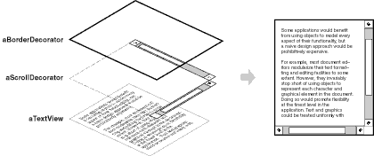
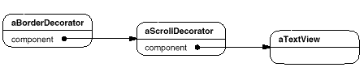
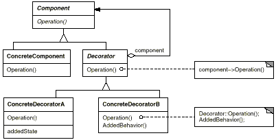
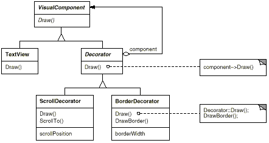
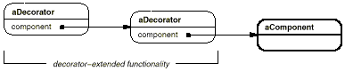
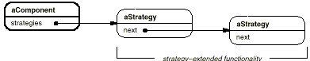
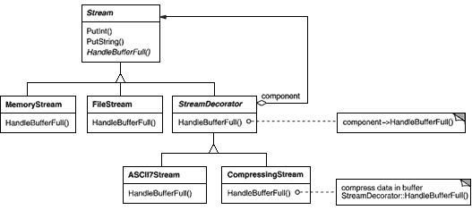

class VisualComponent {
public:
VisualComponent();
virtual void Draw();
virtual void Resize();
// ...
};
class Decorator : public VisualComponent {
public:
Decorator(VisualComponent*);
virtual void Draw();
virtual void Resize();
// ...
private:
VisualComponent* _component;
};
void Decorator::Draw () {
_component->Draw();
}
void Decorator::Resize () {
_component->Resize();
}
class BorderDecorator : public Decorator {
public:
BorderDecorator(VisualComponent*, int borderWidth);
virtual void Draw();
private:
void DrawBorder(int);
private:
int _width;
};
void BorderDecorator::Draw () {
Decorator::Draw();
DrawBorder(_width);
}
void Window::SetContents (VisualComponent* contents) {
// ...
}
Window* window = new Window;
TextView* textView = new TextView;
window->SetContents(textView);
window->SetContents(
new BorderDecorator(
new ScrollDecorator(textView), 1
)
);


Stream* aStream = new CompressingStream(
new ASCII7Stream(
new FileStream("aFileName")
)
);
aStream->PutInt(12);
aStream->PutString("aString");